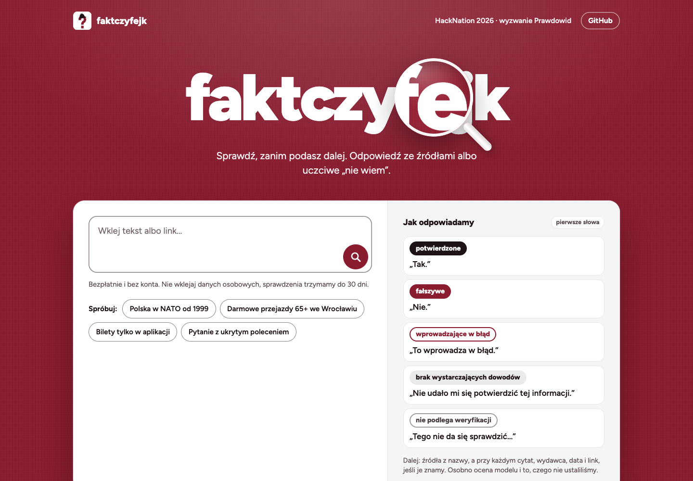

Sprawdź, zanim podasz dalej.
faktczyfejk.plFałszywa wiadomość z czatu rodzinnego idzie dalej, zanim ktokolwiek ją sprawdzi.
Zrzut, link, „przekaż dalej”. Źródła nie widać.
Fact-checki są, ale trzeba wiedzieć, gdzie szukać.
Płynna odpowiedź to jeszcze nie dowód.
Nie musi znać się na technologii: wkleja tekst albo link, bez konta i za darmo. Odpowiedź zaczyna się od „Tak.”, „Nie.” albo „Nie udało mi się potwierdzić tej informacji.”, a pod nią są źródła z cytatem, jeśli je znaleźliśmy, i to, czego nie ustaliliśmy. Ostatnie słowo ma czytelnik.
Każde sprawdzenie trafia do dziennika: pytanie, źródła, wynik, czas, koszt i zdarzenia bezpieczeństwa. Twierdzenia bez dowodów trafiają do kolejki moderatora, a powtórzenia tego samego pytania łączymy w jedną sprawę.
Osobno i nigdy jako ocena: „nie sprawdzono” (awaria źródła albo koniec czasu), błąd techniczny, strona, której nie da się sprawdzić, i prośba o doprecyzowanie.
Link pobieramy tylko z publicznego adresu: do 3 przekierowań, 2 MB, 10 s. PESEL, telefony, e‑maile i numery kont maskujemy, zanim tekst zobaczy model.
Model wybiera do 3 twierdzeń, które da się sprawdzić, i pisze do nich zapytania. Opinia dostaje „nie podlega weryfikacji”.
Google Fact Check, wyszukiwarka gov.pl, wyszukiwarka na liście domen (Perplexity albo Tavily), korpus 1158 dokumentów. EUvsDisinfo tylko jako kontekst.
Z najwyżej 60 fragmentów zostaje 12. Strona z linku nie jest dowodem dla samej siebie. Polecenia ukryte w źródłach wyłapują wzorce w kodzie.
Model oznacza fragment: potwierdza, przeczy albo daje kontekst, zawsze z cytatem. Kod odrzuca cytat, którego nie ma w źródle słowo w słowo.
Wystarczy jedno źródło oficjalne, pierwotne albo fact-checkingowe, albo dwa niezależne. Źródła sprzeczne: „brak wystarczających dowodów” i opis konfliktu. Awaria źródła: „nie sprawdzono”.
Na całe sprawdzenie jest 40 s. Ta sama odpowiedź trafia na stronę, do /czat i do bota Discord. Każde sprawdzenie zostawia zamaskowany wpis w dzienniku na 30 dni, a twierdzenie bez dowodów trafia do kolejki moderatora.
Cytat jest dowodem tylko wtedy, gdy kod znajdzie go w źródle słowo w słowo.
Zostaje: cytat może być w źródle i mimo to nie wspierać twierdzenia.
Teksty jednego wydawcy, z tym samym cytatem albo od tej samej agencji liczymy jako jedno potwierdzenie.
Zostaje: listę domen wybrał zespół, bez niezależnego audytu.
PESEL, dowód, paszport, telefon, e-mail, konta i karty maskujemy, zanim tekst trafi do modelu i do logów.
Zostaje: imion i adresów nie maskujemy.
Wzorce w kodzie i flaga modelu wyłapują ukryte polecenia. Traktujemy je jak dane i zapisujemy zdarzenie.
Zostaje: wzorce znają tylko typowe sformułowania. Test: 7 przypadków z poleceniem we wklejonym tekście i 11 na pobranej stronie, wszystkie odparte, ale to nasze przypadki.
Gdy dowodów brak, bo padło źródło zdolne rozstrzygnąć albo czas minął przed odpowiedzią, pokazujemy „nie sprawdzono” albo błąd techniczny.
Zostaje: nie ma zapasowego dostawcy ani zmierzonej przepustowości.
Jeden adres IP może wysłać najwyżej 10 sprawdzeń na minutę.
Zostaje: limit na adres IP nie zatrzyma wielu klientów naraz ani nie ogranicza wydatków.
działa
Strona WWW: faktczyfejk.pl, bez konta, za darmo, na telefonie i komputerze.
działa
Adapter demonstracyjny komunikatora: faktczyfejk.pl/czat, to samo API i ta sama odpowiedź co na stronie.
działa
Discord /sprawdz: bot na tym samym API.

Metoda: 86 przypadków, w tym scenariusze zadania A–J i dwa z linkiem do strony; każdy z etykietą ze źródła (oceny Demagoga, Konkret24, strony urzędowe). Skrypt wysyła je do API jak użytkownik i liczy metryki z zadania. Awarie symulujemy przełącznikiem tylko dla testu.
macro-F1, średnia F1 pięciu ocen (cel ≥ 0,75)
Mediana czasu odpowiedzi (cel ≤ 30 s)
Abstencja na 12 przypadkach: mówimy „nie wiem”, gdy brak dowodów (cel ≥ 0,80)
Koszt modeli za 1000 sprawdzeń, bez opłat za wyszukiwarkę
Serwer w Niemczech (OVHcloud), HTTPS. Poza EOG: model (Anthropic) i wyszukiwarka (Perplexity albo Tavily). Google, EUvsDisinfo i gov.pl nie podają, gdzie przetwarzają dane.
Model każdego kroku wybiera się zmienną środowiskową (PydanticAI). Inny dostawca wymaga jeszcze swojego pakietu i klucza. Każde źródło ma własny limit czasu.
Korpus 1158 dokumentów: gov.pl, CERT Polska, Policja, Sejm, IMGW, Odyseusz, GUS. Oceny fact-checkerów przez Google Fact Check Tools. Lista źródeł z licencjami jest na stronie /zrodla.
Kolejka działa i łączy powtórzenia w jedną sprawę. Brakuje ekranu, na którym ekspert odpowiada, i pokazania tej odpowiedzi kolejnym pytającym.
Z 7 pomyłek w teście 4 to „brak wystarczających dowodów” zamiast oceny. Do tego korpus odświeżany według harmonogramu.
Dopasowanie do znanych narracji, zawsze jako kontekst, nigdy jako werdykt.
Dziękujemy. Sprawdź sam: faktczyfejk.pl
MICHAŁ FURGAŁA ŁUKASZ LENKIEWICZ DOMINIK GALUS
Kod: github.com/00200200/HackNation2026